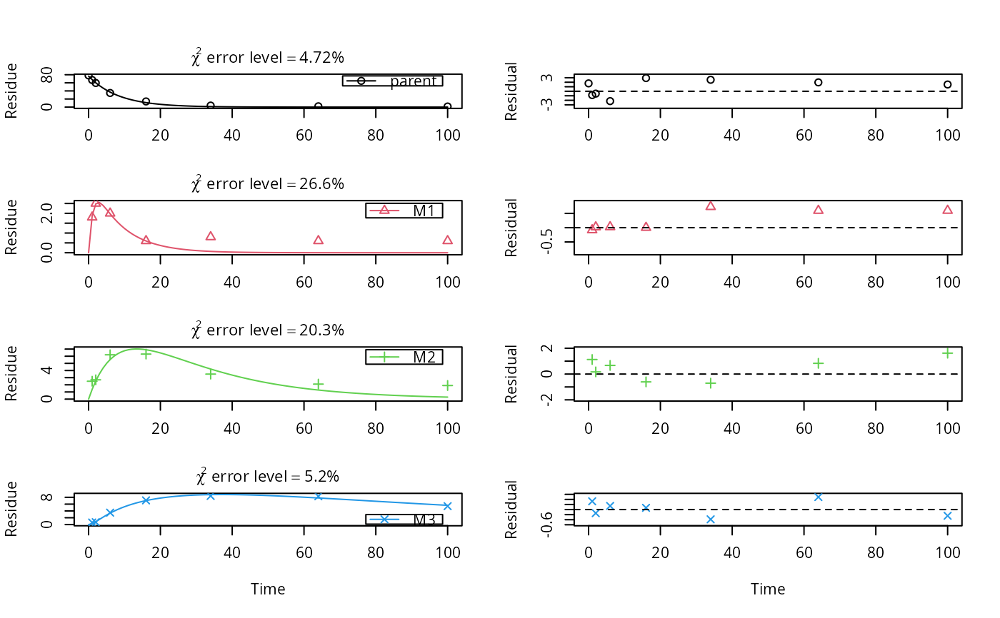
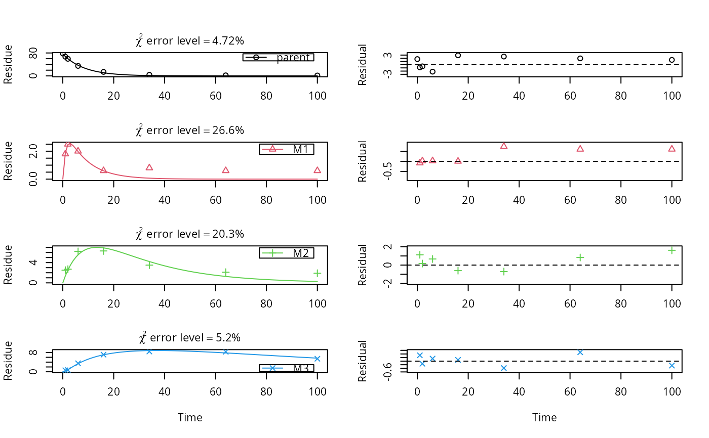

Three experimental datasets from two water sediment systems and one soil
test_data_from_UBA_2014.RdThe datasets were used for the comparative validation of several kinetic evaluation software packages (Ranke, 2014).
test_data_from_UBA_2014Format
A list containing three datasets as an R6 class defined by mkinds.
Each dataset has, among others, the following components
titleThe name of the dataset, e.g.
UBA_2014_WS_riverdataA data frame with the data in the form expected by
mkinfit
Source
Ranke (2014) Prüfung und Validierung von Modellierungssoftware als Alternative zu ModelMaker 4.0, Umweltbundesamt Projektnummer 27452
Examples
# \dontrun{
# This is a level P-II evaluation of the dataset according to the FOCUS kinetics
# guidance. Due to the strong correlation of the parameter estimates, the
# covariance matrix is not returned. Note that level P-II evaluations are
# generally considered deprecated due to the frequent occurrence of such
# large parameter correlations, among other reasons (e.g. the adequacy of the
# model).
m_ws <- mkinmod(parent_w = mkinsub("SFO", "parent_s"),
parent_s = mkinsub("SFO", "parent_w"))
#> Temporary DLL for differentials generated and loaded
f_river <- mkinfit(m_ws, test_data_from_UBA_2014[[1]]$data, quiet = TRUE)
#> Warning: Observations with value of zero were removed from the data
plot_sep(f_river)
 summary(f_river)$bpar
#> Warning: Could not calculate correlation; no covariance matrix
#> Estimate se_notrans t value Pr(>t) Lower Upper
#> parent_w_0 95.91998118 NA NA NA NA NA
#> k_parent_w 0.41145375 NA NA NA NA NA
#> k_parent_s 0.04663944 NA NA NA NA NA
#> f_parent_w_to_parent_s 0.12467894 NA NA NA NA NA
#> f_parent_s_to_parent_w 0.50000000 NA NA NA NA NA
#> sigma 3.13612618 NA NA NA NA NA
mkinerrmin(f_river)
#> err.min n.optim df
#> All data 0.1090929 5 6
#> parent_w 0.0817436 3 3
#> parent_s 0.1619965 2 3
# This is the evaluation used for the validation of software packages
# in the expertise from 2014
m_soil <- mkinmod(parent = mkinsub("SFO", c("M1", "M2")),
M1 = mkinsub("SFO", "M3"),
M2 = mkinsub("SFO", "M3"),
M3 = mkinsub("SFO"),
use_of_ff = "max")
#> Temporary DLL for differentials generated and loaded
f_soil <- mkinfit(m_soil, test_data_from_UBA_2014[[3]]$data, quiet = TRUE)
#> Warning: Observations with value of zero were removed from the data
plot_sep(f_soil, lpos = c("topright", "topright", "topright", "bottomright"))

summary(f_soil)$bpar
#> Estimate se_notrans t value Pr(>t) Lower
#> parent_0 76.55425650 0.859186398 89.1008711 1.113861e-26 74.755959420
#> k_parent 0.12081956 0.004601918 26.2541722 1.077359e-16 0.111561575
#> k_M1 0.84258615 0.806159719 1.0451851 1.545266e-01 0.113779564
#> k_M2 0.04210880 0.017083034 2.4649483 1.170188e-02 0.018013857
#> k_M3 0.01122918 0.007245855 1.5497385 6.885051e-02 0.002909431
#> f_parent_to_M1 0.32240200 0.240783878 1.3389684 9.819070e-02 NA
#> f_parent_to_M2 0.16099855 0.033691952 4.7785463 6.531136e-05 NA
#> f_M1_to_M3 0.27921507 0.269423709 1.0363419 1.565266e-01 0.022978202
#> f_M2_to_M3 0.55641252 0.595119937 0.9349586 1.807707e-01 0.008002509
#> sigma 1.14005399 0.149696423 7.6157731 1.727024e-07 0.826735778
#> Upper
#> parent_0 78.35255358
#> k_parent 0.13084582
#> k_M1 6.23970946
#> k_M2 0.09843260
#> k_M3 0.04333992
#> f_parent_to_M1 NA
#> f_parent_to_M2 NA
#> f_M1_to_M3 0.86450778
#> f_M2_to_M3 0.99489895
#> sigma 1.45337221
mkinerrmin(f_soil)
#> err.min n.optim df
#> All data 0.09649963 9 20
#> parent 0.04721283 2 6
#> M1 0.26551208 2 5
#> M2 0.20327575 2 5
#> M3 0.05196550 3 4
# }
summary(f_river)$bpar
#> Warning: Could not calculate correlation; no covariance matrix
#> Estimate se_notrans t value Pr(>t) Lower Upper
#> parent_w_0 95.91998118 NA NA NA NA NA
#> k_parent_w 0.41145375 NA NA NA NA NA
#> k_parent_s 0.04663944 NA NA NA NA NA
#> f_parent_w_to_parent_s 0.12467894 NA NA NA NA NA
#> f_parent_s_to_parent_w 0.50000000 NA NA NA NA NA
#> sigma 3.13612618 NA NA NA NA NA
mkinerrmin(f_river)
#> err.min n.optim df
#> All data 0.1090929 5 6
#> parent_w 0.0817436 3 3
#> parent_s 0.1619965 2 3
# This is the evaluation used for the validation of software packages
# in the expertise from 2014
m_soil <- mkinmod(parent = mkinsub("SFO", c("M1", "M2")),
M1 = mkinsub("SFO", "M3"),
M2 = mkinsub("SFO", "M3"),
M3 = mkinsub("SFO"),
use_of_ff = "max")
#> Temporary DLL for differentials generated and loaded
f_soil <- mkinfit(m_soil, test_data_from_UBA_2014[[3]]$data, quiet = TRUE)
#> Warning: Observations with value of zero were removed from the data
plot_sep(f_soil, lpos = c("topright", "topright", "topright", "bottomright"))

summary(f_soil)$bpar
#> Estimate se_notrans t value Pr(>t) Lower
#> parent_0 76.55425650 0.859186398 89.1008711 1.113861e-26 74.755959420
#> k_parent 0.12081956 0.004601918 26.2541722 1.077359e-16 0.111561575
#> k_M1 0.84258615 0.806159719 1.0451851 1.545266e-01 0.113779564
#> k_M2 0.04210880 0.017083034 2.4649483 1.170188e-02 0.018013857
#> k_M3 0.01122918 0.007245855 1.5497385 6.885051e-02 0.002909431
#> f_parent_to_M1 0.32240200 0.240783878 1.3389684 9.819070e-02 NA
#> f_parent_to_M2 0.16099855 0.033691952 4.7785463 6.531136e-05 NA
#> f_M1_to_M3 0.27921507 0.269423709 1.0363419 1.565266e-01 0.022978202
#> f_M2_to_M3 0.55641252 0.595119937 0.9349586 1.807707e-01 0.008002509
#> sigma 1.14005399 0.149696423 7.6157731 1.727024e-07 0.826735778
#> Upper
#> parent_0 78.35255358
#> k_parent 0.13084582
#> k_M1 6.23970946
#> k_M2 0.09843260
#> k_M3 0.04333992
#> f_parent_to_M1 NA
#> f_parent_to_M2 NA
#> f_M1_to_M3 0.86450778
#> f_M2_to_M3 0.99489895
#> sigma 1.45337221
mkinerrmin(f_soil)
#> err.min n.optim df
#> All data 0.09649963 9 20
#> parent 0.04721283 2 6
#> M1 0.26551208 2 5
#> M2 0.20327575 2 5
#> M3 0.05196550 3 4
# }